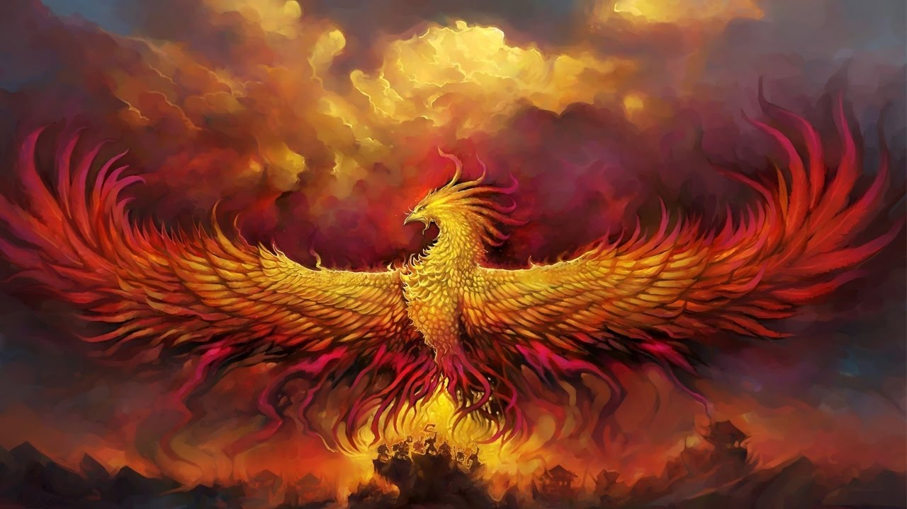

Фе́никс (греч. Φοῖνιξ, перс. ققنوس, лат. phoenix; возможно от греч. φοίνιξ, «пурпурный, багряный») — мифологическая птица, обладающая способностью сжигать себя и затем возрождаться. Известна в мифологиях разных культур, часто связывается с солнечным культом. Считалось, что феникс имеет внешний вид, похожий на орла с ярко-красным или золотисто-красным оперением. Предвидя смерть, сжигает себя в собственном гнезде, а из пепла появляется птенец. По другим версиям мифа, из пепла возрождается сам Феникс. Обычно считалось, что Феникс — единственная, уникальная особь своего вида. В метафорическом истолковании Феникс — символ вечного обновления, бессмертия.
